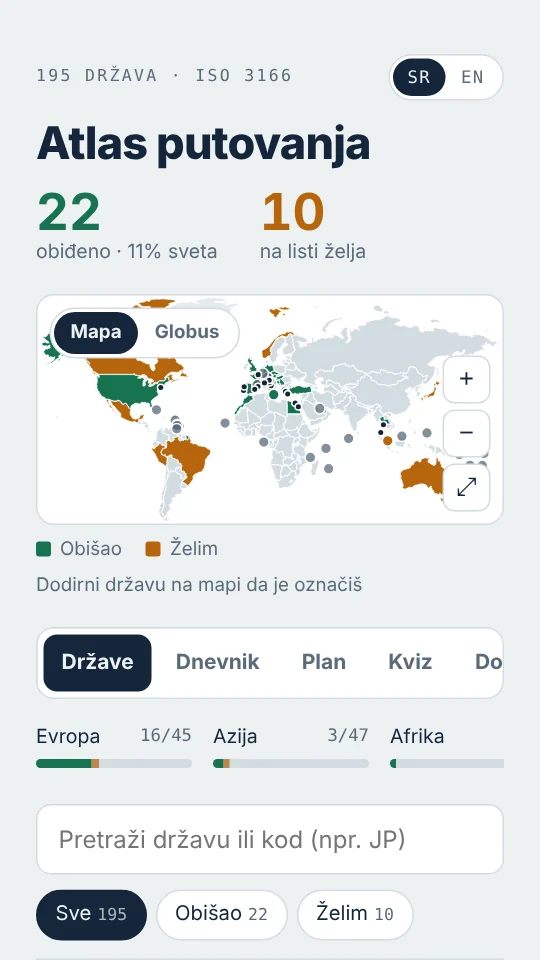
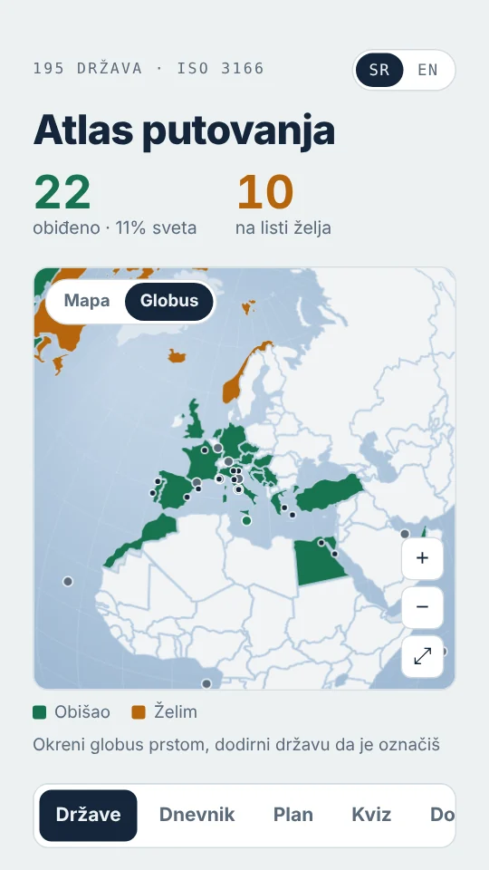
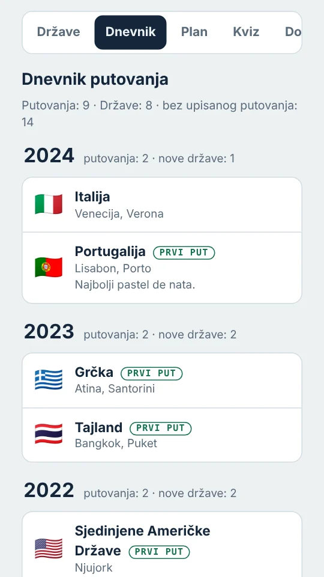
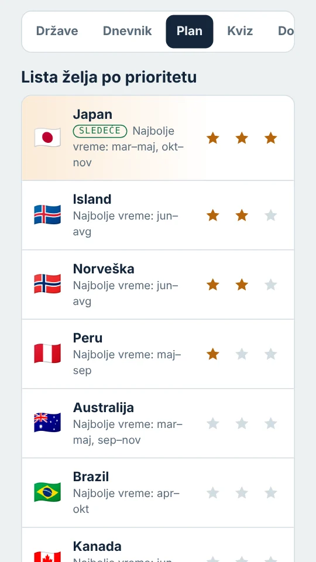
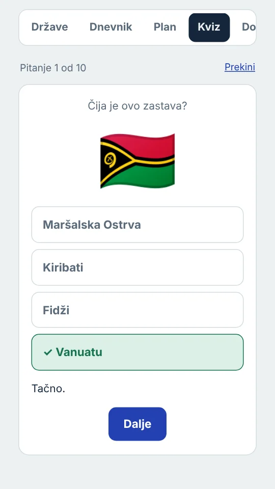
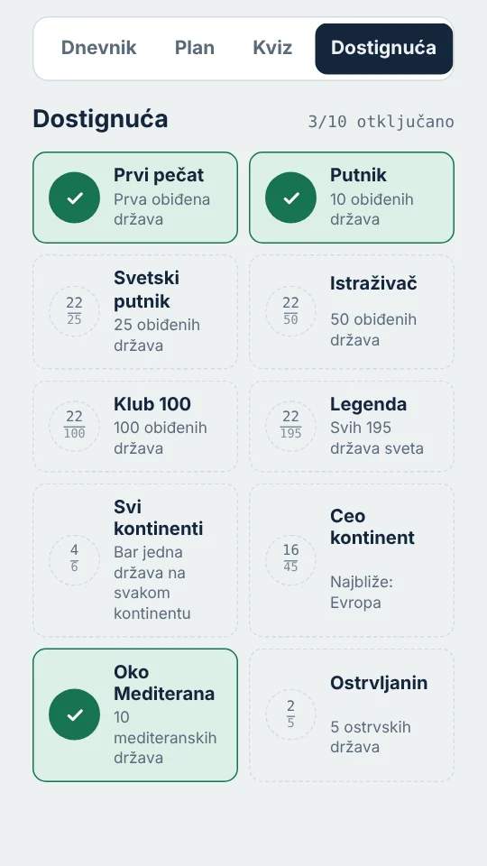

Tvoja mapa obiđenog sveta.
Your map of the world you've seen.
Označi države koje si obišao i one koje želiš da posetiš. Gledaj kako se mapa boji, vodi dnevnik putovanja i otključavaj dostignuća.
Mark the countries you've visited and the ones you want to see. Watch your map fill in, keep a travel journal and unlock achievements.
Bez naloga i registracije. Radi na srpskom i engleskom.
No account, no sign-up. Works in Serbian and English.

Šta sve možeš
What you can do
Jedna aplikacija za sve gde si bio i sve gde tek ideš.
One app for everywhere you've been and everywhere you're going next.
Obišao i Želim
Visited and Want to go
Svaku od 195 država označiš jednim dodirom, sa liste ili direktno sa mape.
Mark any of the 195 countries with one tap, from the list or right on the map.
Mapa i globus
Map and globe
Ravna mapa ili globus koji okrećeš prstom. Male države su tačke koje možeš da dodirneš.
A flat map or a globe you spin with your finger. Small countries are dots you can tap.
Dnevnik putovanja
Travel journal
Za svako putovanje godina, gradovi, beleška i fotografija. Sve poređano po godinama.
Year, cities, a note and a photo for every trip, laid out year by year.
Plan
Plan
Lista želja po prioritetu, najbolje vreme za posetu i predlozi država blizu onih u kojima si bio.
A wish list sorted by priority, the best time to visit, and suggestions near places you've been.
Podaci o državama
Country facts
Glavni grad, stanovništvo, površina, valuta, jezik, pozivni broj i strana kojom se vozi.
Capital, population, area, currency, language, calling code and which side they drive on.
Dostignuća
Achievements
Od prvog pečata do Kluba 100. Napredak po kontinentima vidiš u svakom trenutku.
From your first stamp to Club 100, with progress for every continent always in view.
Kviz
Quiz
Deset pitanja o zastavama i glavnim gradovima. Pamti se tvoj najbolji rezultat.
Ten questions on flags and capitals, with your best score remembered.
Podeli svoju mapu
Share your map
Slika mape ili globusa sa tvojom statistikom, spremna za objavu na mrežama.
An image of your map or globe with your stats, ready to post.
Rezervna kopija
Backup
Oznake i beleške izvezeš u datoteku i vratiš ih na drugom telefonu.
Export your marks and notes to a file and restore them on another phone.
Kako izgleda
What it looks like
Šest ekrana iz aplikacije, sa primerom podataka.
Six screens from the app, shown with sample data.





Česta pitanja
Questions
Kratki odgovori na ono što se najčešće pita.
Short answers to what people ask first.
Kada izlazi aplikacija?When is the app coming out?
Android verzija je u pripremi. Datum još nije određen.
The Android version is being prepared. There's no date yet.
Da li mi treba nalog?Do I need an account?
Ne. Aplikacija radi bez registracije i prijave.
No. The app works without signing up or logging in.
Gde se čuvaju moji podaci?Where is my data stored?
Oznake, beleške i fotografije ostaju na tvom telefonu. Rezervnu kopiju oznaka i beleški možeš da izvezeš u datoteku i uvezeš na drugom uređaju.
Your marks, notes and photos stay on your phone. You can export a backup of marks and notes to a file and import it on another device.
Koje države su na listi?Which countries are on the list?
Svih 193 članice Ujedinjenih nacija, uz Vatikan i Palestinu, ukupno 195.
All 193 United Nations members plus Vatican City and Palestine, 195 in total.
Odakle su podaci o državama?Where do the country facts come from?
Glavni gradovi, površine, valute i pozivni brojevi provereni su prema javnom skupu podataka o državama, a broj stanovnika je iz podataka Svetske banke.
Capitals, areas, currencies and calling codes are checked against a public country dataset, and population figures come from World Bank data.